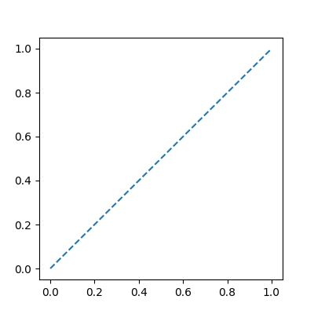

runpython#
This directive executes snippets of code inserted and add the output to the documentation, as plain text or even RST format.
Usage#
In conf.py:
extensions = [ ...
'sphinx_runpython.runpython',
]
Documentation means many examples which needs to be updated when a change happen unless the documentation runs the example itself and update its output. That’s what this directive does. It adds as raw text whatever comes out throught the standard output.
One example:
.. runpython::
:showcode:
import os
for i, name in enumerate(os.listdir(".")):
print(i, name)
Which gives:
<<<
import os
for i, name in enumerate(os.listdir(".")):
print(i, name)
>>>
0 .ruff_cache
1 .gitignore
2 pyproject.toml
3 .git
4 dist
5 .github
6 MANIFEST.in
7 _unittests
8 setup.cfg
9 azure-pipelines.yml
10 requirements-dev.txt
11 CHANGELOGS.rst
12 setup.py
13 requirements.txt
14 sphinx_runpython
15 _doc
16 LICENSE.txt
17 README.rst
The output can also be compiled as RST format and the code can be hidden. It is useful if the documentation is a copy/paste of some external process or function. This function can be directly called from the documentation. The output must be converted into RST format. It is then added to the documentation. It is quite useful to display the version of some installed modules.
file 0: .ruff_cache
file 1: .gitignore
file 2: pyproject.toml
file 3: .git
file 4: dist
file 5: .github
file 6: MANIFEST.in
file 7: _unittests
file 8: setup.cfg
file 9: azure-pipelines.yml
file 10: requirements-dev.txt
file 11: CHANGELOGS.rst
file 12: setup.py
file 13: requirements.txt
file 14: sphinx_runpython
file 15: _doc
file 16: LICENSE.txt
file 17: README.rst
If the code throws an exception (except a syntax error),
it can be caught by adding the option :exception:.
The directive displays the traceback.
<<<
import os
for i, name in enumerate(os.listdir("not existing")):
pass
>>>
[runpythonerror]
Traceback (most recent call last):
exec(obj, globs, loc)
File "", line 6, in <module>
File "", line 4, in run_python_script_139720871624128
FileNotFoundError: [Errno 2] No such file or directory: 'not existing'
The directive can also be used to display images
with a tweak however. It consists in writing rst
code. The variable __WD__ indicates the local
directory.
<<<
print("__WD__=%r" % __WD__)
>>>
__WD__='/home/xadupre/github/sphinx-runpython/_doc/api'
Applied to images…
The image needs to be save in the same folder than the rst file.
{kind=link}
Option :toggle: can hide the code or the output or both
but let the user unhide it by clicking on a button.
<<<
for i in range(0, 10):
print("i=", i)
The last option of runpython allows the user to keep some context from one execution to the next one.
<<<
a_to_keep = 5
print("a_to_keep", "=", a_to_keep)
>>>
a_to_keep = 5
<<<
a_to_keep += 5
print("a_to_keep", "=", a_to_keep)
>>>
a_to_keep = 10
sphinx-autorun offers a similar service except it cannot produce compile RST content, hide the source and a couple of other options.
Interesting functions#
- sphinx_runpython.runpython.run_cmd(cmd, sin='', shell=None, wait=False, log_error=True, stop_running_if=None, encerror='ignore', encoding='utf8', change_path=None, communicate=True, preprocess=True, timeout=None, catch_exit=False, logf=None, tell_if_no_output=None, prefix_log=None)[source]#
Runs a command line and wait for the result.
- Parameters:
cmd – command line
sin – sin: what must be written on the standard input
shell – if True, cmd is a shell command (and no command window is opened)
wait – call
proc.waitlog_error – if log_error, call logf (error)
stop_running_if – the function stops waiting if some condition is fulfilled. The function received the last line from the logs. Signature:
stop_waiting_if(last_out, last_err) -> bool. The function must return True to stop waiting. This function can also be used to intercept the standard output and the standard error while running.encerror – encoding errors (ignore by default) while converting the output into a string
encoding – encoding of the output
change_path – change the current path if not None (put it back after the execution)
communicate – use method communicate which is supposed to be safer, parameter
waitmust be Truepreprocess – preprocess the command line if necessary (not available on Windows) (False to disable that option)
timeout – when data is sent to stdin (
sin), a timeout is needed to avoid waiting for ever (timeout is in seconds)catch_exit – catch SystemExit exception
logf – logging function (if not None, bypass others parameters)
tell_if_no_output – tells if there is no output every tell_if_no_output seconds
prefix_log – add a prefix to a line before printing it
- Returns:
content of stdout, stdres (only if wait is True)
from sphinx_runpython.runpython import run_cmd out, err = run_cmd("python setup.py install", wait=True)
If you are using this function to run git function, parameter
shellmust be True. The function catches SystemExit exception. See Constantly print Subprocess output while process is running. If wait is False, the function returns the started process.__exit__should be called if wait if False. Parameter prefix_log was added.
- sphinx_runpython.runpython.sphinx_runpython_extension.remove_extra_spaces_and_black(filename: str, apply_black=True, is_string=None) str[source]#
Removes extra spaces in a filename, replaces the file in place.
- Parameters:
filename – file name or string (but it assumes it is python).
apply_black – if True, calls black on the file
is_string – force filename to be a string
- Returns:
number of removed extra spaces
Directive#
- class sphinx_runpython.runpython.sphinx_runpython_extension.RunPythonDirective(name, arguments, options, content, lineno, content_offset, block_text, state, state_machine)[source]#
Extracts script to run described by
.. runpython::and modifies the documentation.The following code prints the version of Python on the standard output. It is added to the documentation:
.. runpython:: :showcode: import sys print("sys.version_info=", str(sys.version_info))
If give the following results:
sys.version_info= sys.version_info(major=3, minor=10, micro=12, releaselevel='final', serial=0)
Options showcode can be used to display the code. The option rst will assume the output is in RST format and must be interpreted. showout will complement the RST output with the raw format.
The directive has a couple of options:
:assert:condition to validate at the end of the execution to check it went right:current:runs the script in the source file directory:exception:the code throws an exception but it is expected. The error is displayed.:indent:<int>to indent the output:language:: changes::into.. code-block:: language:linenos:to show line numbers:noblack:if present, leaves the code as it is and does not apply black by default,:numpy_precision: <precision>, runnumpy.set_printoptions(precision=...), precision is 3 by default:process:run the script in an another process:restore:restore the local context stored in sphinx application by the previous call to runpython:rst:to interpret the output, otherwise, it is considered as raw text:setsysvar:adds a member to sys module, the module can act differently based on that information, if the value is left empty, sys.enable_disabled_documented_pieces_of_code will be be set up to True.:showcode:to show the code before its output:showoutif :rst: is set up, this flag adds the raw rst output to check what is happening:sin:<text_for_in>which text to display before the code (by default In):sout:<text_for_in>which text to display before the output (by default Out):sphinx:by default, function nested_parse_with_titles is used to parse the output of the script, if this option is set to false, public_doctree.:store:stores the local context in sphinx application to restore it later by another call to runpython:toggle:add a button to hide or show the code, it takes the valuescodeoroutorboth. The direction then hides the given section but adds a button to show it.:warningout:name of warnings to disable (ex:ImportWarning), separated by spaces:store_in_file:the directive store the script in a file,then executes this file (only if
:process:is enabled), this trick is needed when the script to executes relies on function such inspect.getsource which requires the script to be stored somewhere in order to retrieve it.
Option rst can be used the following way:
.. runpython:: :rst: for l in range(0,10): print("**line**", "*" +str(l)+"*") print('')
Which displays interpreted RST:
line 0
line 1
line 2
line 3
line 4
line 5
line 6
line 7
line 8
line 9
If the directive produces RST text to be included later in the documentation, it is able to interpret docutils directives and Sphinx directives with function nested_parse_with_titles. However, if this text contains titles, it is better to use option
:sphinx: false. Unless process option is enabled, global variables cannot be used. sphinx-autorun offers a similar service except it cannot produce compile RST content, hide the source and a couple of other options. Option toggle can hide or unhide the piece of code or/and its output. The directive also adds local variables such as__WD__which contains the path to the documentation which contains the directive. It is useful to load additional filesos.path.join(__WD__, ...).<<<
print("Hide or unhide this output.")